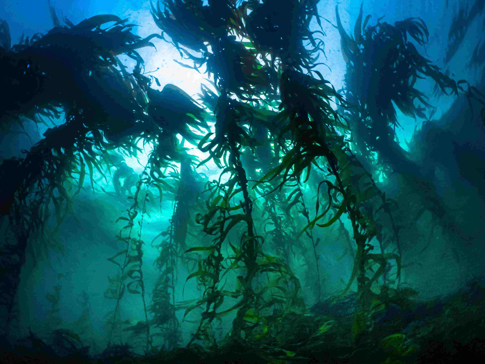
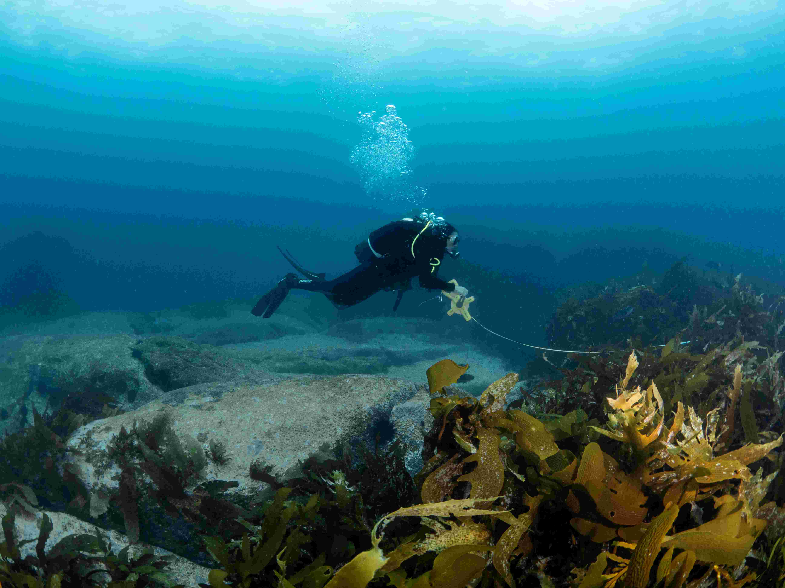
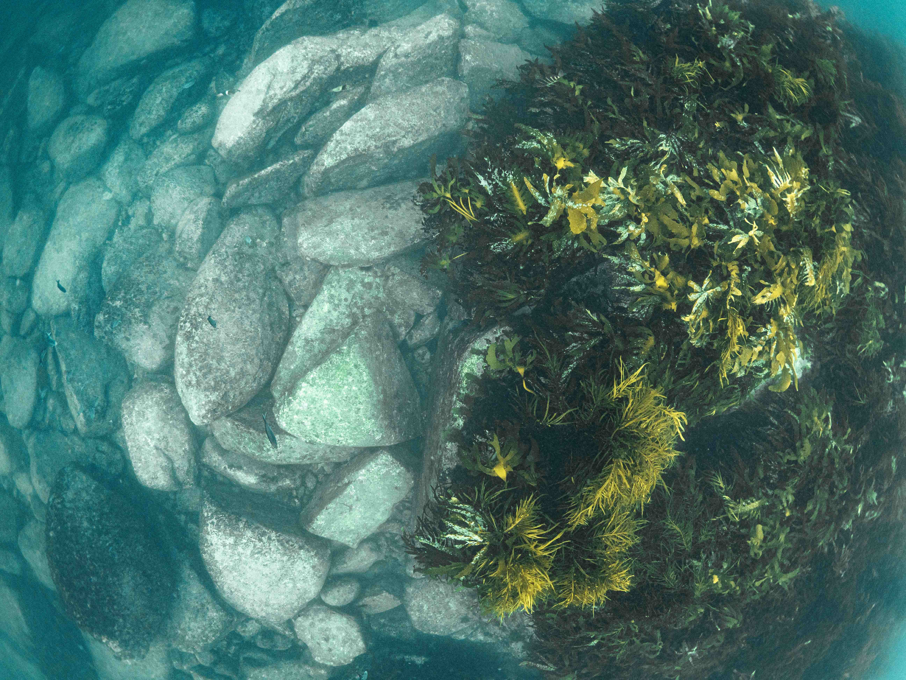
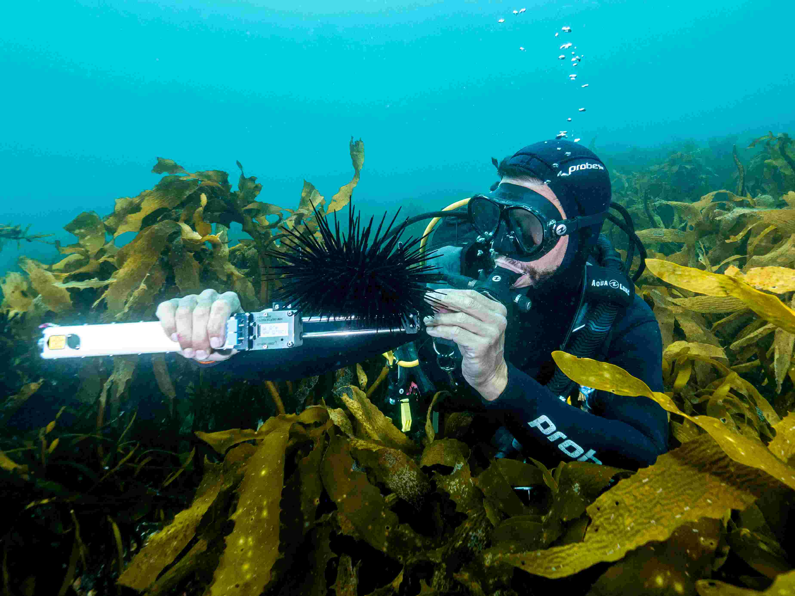
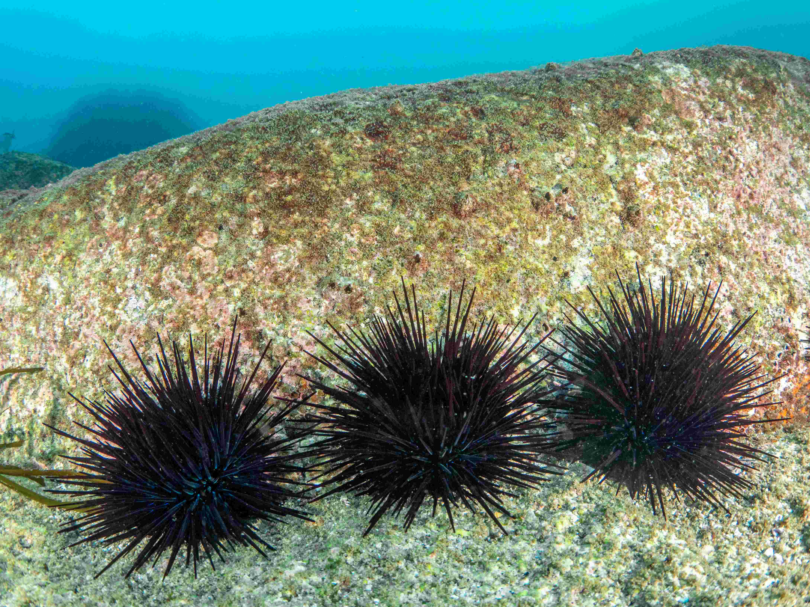
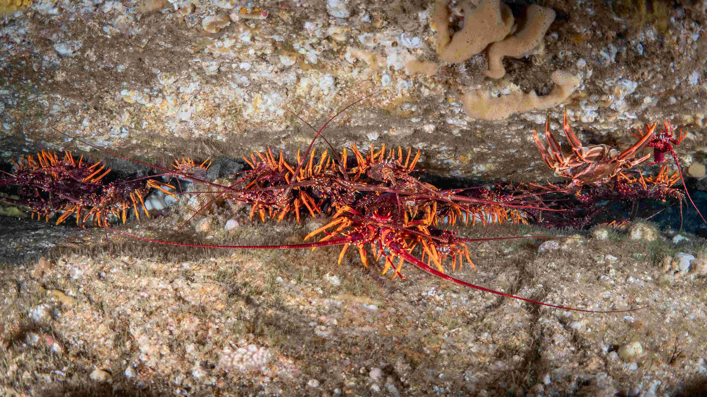

Lesson 1: Lobsters – Urchins – Kelp
Using BigbFish to explore trophic cascades, overfishing and kelp forest loss



Core concepts
- Long-spined sea urchins have had their home range extended into Tasmania due to climate change and ocean warming. They are a range shifting species.
- Long-spined sea urchins have become a dominant herbivore (plant-eating animal), which has destroyed underwater seaweed or kelp forests that are key habitats for many Tasmanian fish species.
- Long-spined sea urchin predators are primarily the southern rock lobster. Yet, lobster abundance is very low due to recreational and commercial fishing. Simply speaking, lobsters are overfished and cannot control urchins.
- Only larger rock lobsters are able to consume long-spined sea urchins.
- Once urchins eat all the seaweed and form an “urchin barren” it is very hard and slow to restore the kelp forests back, unless all urchins are removed.
- Over the last few decades, nearly 90% of Tasmanian kelp forests have been lost. This has devastating impacts on Tasmanian seafood industry, especially abalone harvests. Tasmanian government is supporting an urchin harvest industry with the goal of artificially reducing urchin numbers.
- To control urchin numbers it is essential to restore southern rock lobster populations.
The lesson introduces UN Sustainable Development Goal 14: “Conserve and sustainably use the oceans, seas and marine resources for sustainable development”
Learning intention
Students use the Big Fish game (as a simulation) to model a trophic cascade on temperate rocky reefs:
- Seaweed or kelp = habitat and primary producer
- Long-spined sea urchins = grazer that can remove kelp and create “barrens”
- Rock lobsters = predator that can reduce urchin numbers and grazing pressure
Real-world context: long-spined urchins have expanded into Tasmania and are having large negative impact on Tasmanian seafood industry and ecosystems.
Success criteria
By the end of the lesson and assessment, students can:
- Draw a simple food web for kelp–urchin–lobster and label energy flow.
- Explain, with evidence from their game data, what happens when lobster numbers drop.
- Propose one management response (e.g., protection of predators, urchin harvest), explain their costs and benefits and justify them.



Duration and resources
Duration
Recommended for 2x50–60 min lessons (includes game and analysis and write-up)
Resources
- Big Fish card game – ideally one deck per 4 students.
- Cardboard cut to resemble a large blank card (to create a new card of policy action)
- Student recording sheet for flow chart creation
- Whiteboard / projector
Assessments
The recommend a creative in-class assessment that requires students to:
1) design a new card in the game (Wild card or Event card) that would represent a policy to manage urchin numbers,
2) present the card to the class, explain why it is useful and how it works,
3) (optional) draw a flowchart showing the interactions of long-spined sea urchins with other species.
The policy card should create a change within the game, for example, a new rule or incentive related to a real-life possible solution.
Tips
It can be useful for students to look through Wild and Event cards already present in the Big Fish card game to understand the type of cards that could be created and actions they do (i.e. discard a card, grow fish, get an extra card or fish).
Example policy cards include a one-off wild card that translocates lobsters or an event card that gives some boost to the players because a long-spined sea urchin fishery was established and subsidised by the Tasmanian government. Both policies currently occur in Tasmania and students can explore more information in the links above.
Download the lesson PowerPoint slides



Setup and game play explanation
If you are familiar with the usual Big Fish card game rules, the scenario in this lesson starts with a setup where players’ “fishing spot” already has more cards (fish) and the game only goes for three rounds. This aims to create a faster and more educational experience. To learn about the rules of the typical Big Fish game, you can visit the rules page on the Big Fish card game website. When playing the game, in each round students can take their turn all at once (which is faster) or in a consecutive order (which could be more interactive).
The two short videos explain how to set up the game for the class and demonstrate the game play and rules. They are also explained in the Lesson 1 PowerPoint document, available from this page.
Game setup
Game play
Word list, key terms and concepts
Below are some key concepts and words that students can learn during the lesson and assessment.
Food webs; Ecosystem interactions; Size-based species interactions; Climate change; Range shifting species; Herbivores and predators; Ecosystem models; Fish sizes; Fishing selectivity; Cascading effects; Human impact; Management policy; Sustainability; Recreational fishing; Commercial fishing


Extension to Years 11–12
This design can be extended for Years 11 and 12. For example in Year 11 Biology Unit 1, students are expected to investigate ecosystems as dynamic systems (biotic + abiotic factors) and use science inquiry skills: posing questions, designing an investigation, analysing data, evaluating limitations, and communicating evidence-based conclusions. Instead of framing the lesson as playing a game, frame it around the concept of using the game as a model to improve understanding. The Big Fish activity becomes the model system they run repeatedly under different conditions (treatments), then analyse like an experiment.
To simulate replications
Instead of one play per group, each group plays at least 3 games for each setup (treatment), or the class divides treatments and pools the data. You can change the length of the game by rearranging the Event card deck (so the game runs for 4, 5 or more rounds).
To simulate treatments
Use different setups:
- Usual setup as described above – control.
- No fishing of lobsters – lobsters cannot be fished in the game.
- High fishing pressure – all lobsters are caught already in the first round.
- Climate change extreme – urchins arrive even faster by adding the second “Long Spined Sea Urchin Arrive” card in the event deck.
Further video resources
Video 1: how lobsters control urchins
Institute for Marine and Antarctic Studies (IMAS, University of Tasmania) scientist Scott Ling explains kelp loss, the role of rock lobsters, and restoration attempts (7 mins).
Video 2: urchin harvesting
IMAS scientist John Keane talks about urchin removal by commercial divers (2 mins).
Video 3: science behind urchins and kelp loss
Woodbridge School Marine Discovery Centre video about ecosystems, biotic and abiotic factors, food webs, climate change, range-extending species and kelp loss (10 mins).
Video 4: Tasmanian marine foodwebs
Woodbridge School Marine Discovery Centre video about Tasmanian marine food webs (5 mins).
Video 5: Urchins and kelp loss
Great Southern Reef Foundation short video about urchins and kelp loss (40 sec).
Support and credits
The development of school lessons and school visits during September–November 2025 were supported by the Inspiring Australia Tasmania STEM community grant.

Underwater photography provided by the game developer and science communicator Matt Testoni.